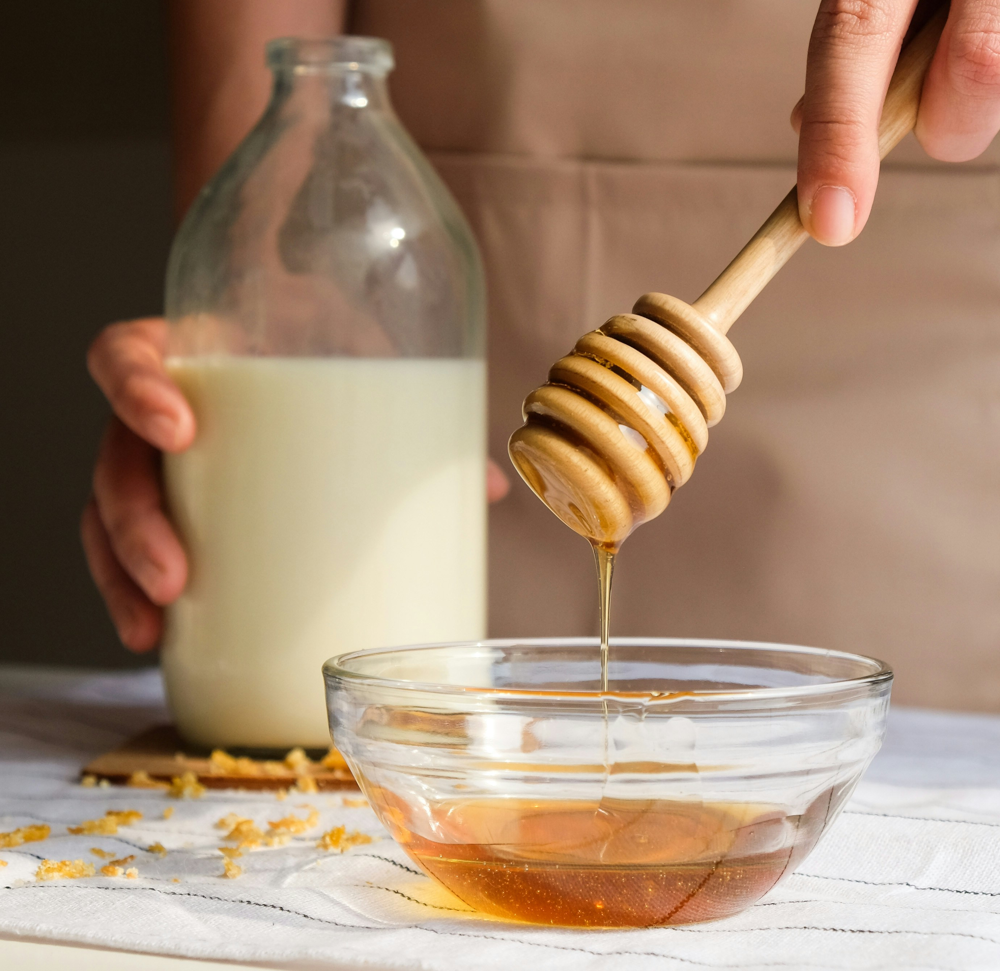

Recipe for Honey Milk
Back To Index

Photo from Sandi Benedicta on Unsplash
Description
Have you ever had trouble relaxing before bed after a rough day? This recipe is my go-to when I've had a bad day and am struggling to comfort myself. It's a recipe that my mother taught me when I was younger at its core, but as I have gotten older, I have been able to experiment and add to it.
Hopefully, you will be able to find some variation of it that offers you the same comfort!
Ingredients
- Milk or Milk Substitute (Pick your favorite! Any should work!)
- Honey (If you substitute this one it won't be honey milk any more but if you don't like honey, you can technically substitute maple syrup or a sweetener of your choice)
- Optional: Cinnamon (or other sweeter spices)
- Optional: A Tiny Amount of Vanilla
- Optional: Tea that you find comforting (Ideally one that's caffeine-free if you're preparing this late at night!)
I would highly recommend you try making the recipe without any optional ingredients your first time. That way, if you don't like it but want to try it again, there are fewer things that could have been what you didn't like. Then, add optional ingredients one by one once you have a base you feel you can improve on -- or just stick with that base if you like it enough!
Basic Steps
- Heat the milk. You can do this in a saucepan on the stove until it is steaming or in the microwave in a microwave-safe mug. (If you do it in a microwave, do it in small increments of 30 seconds or less and keep an eye on it; milk can boil over very quickly in the microwave.)
- Add honey to the milk to taste. If you are adding additional ingredients like cinnamon or a small amount of vanilla, you should add them after the honey.
- Stir the honey and milk mixture until the honey is fully dissolved. If you use a spoon to pick up some of the liquid at the bottom early on, you will see some of it is still viscous. Once the mixture is even all the way through, if you aren't adding anything else, you are done!
Additional Notes
- If you are adding a teabag or tea: You will want to decide early on whether you want to steep the teabag in the heated milk or separately. Steeping the teabag in the heated milk will take longer and may lead to the tea not infusing as well as it would if you boil water and brew the tea separately, mixing it into the hot milk and honey as you would prefer. However, if you brew the tea separately and mix it in later, that involves more washing up afterwards, as well as having to juggle trying to heat two separate liquids at the same time, especially if you don't have a kettle. If you choose to add the teabag, you should add it to the heated milk at the same time as the honey and remove it after about 5-7 minutes. If you brew the tea separately, you should fully prepare the hot milk and honey and the tea separately before mixing them.
- If you are adding other optional ingredients: All of the other optional ingredients I can think of are simple to add; you can just add them after you've added the honey and mix it all in together.